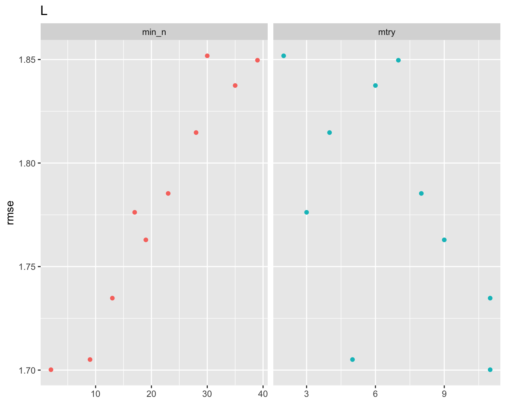
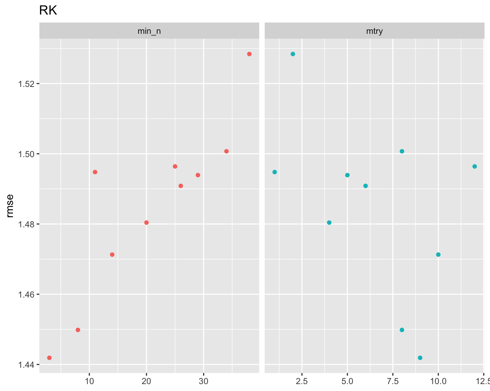

J Abundance model hyper parameters for initial fit
## [[1]]
Figure J.1: Root mean squared evaluation of hyper parameters across all species
##
## [[2]]

Figure J.2: Root mean squared evaluation of hyper parameters across all species
##
## [[3]]
Figure J.3: Root mean squared evaluation of hyper parameters across all species
##
## [[4]]

Figure J.4: Root mean squared evaluation of hyper parameters across all species
##
## [[5]]Figure J.5: Root mean squared evaluation of hyper parameters across all species